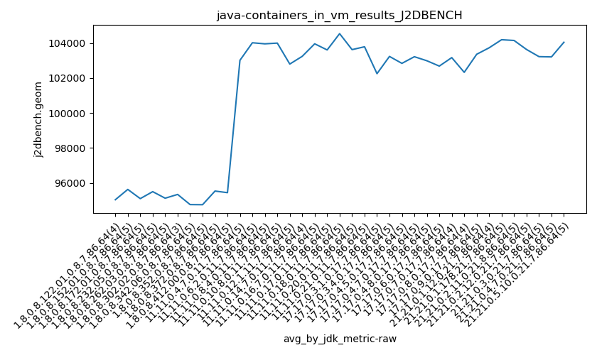
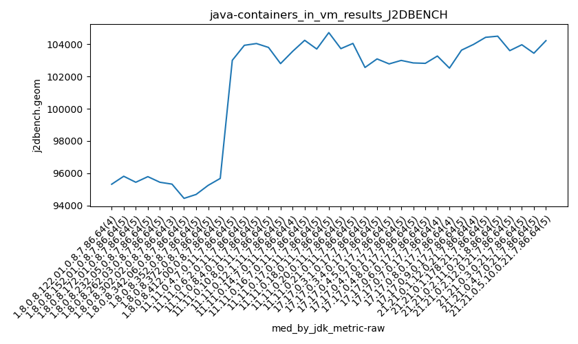

java- J2DBENCH
Context at bottom
/home/jvanek/git/benchmarks-in-nested-virtualisation-toolchain/final_results/containers_in_vm_results/containers_in_vm_results_JMH
java-
J2DBENCH
/home/jvanek/git/benchmarks-in-nested-virtualisation-toolchain/final_results/containers_in_vm_results/containers_in_vm_results_J2DBENCH
java-
J2DBENCH
containers_in_vm_results_J2DBENCH
final score
Expected number of java- JDKs: 37
1st avgmed_alljdks_metric:
/home/jvanek/git/benchmarks-in-nested-virtualisation-toolchain/final_results/result_processing.py /home/jvanek/git/benchmarks-in-nested-virtualisation-toolchain/final_results/containers_in_vm_results/containers_in_vm_results_J2DBENCH j2dbench.geom False
values: [95807, 94508, 95321, 94508, 96883, 95815, 96521, 94377, 94531, 95443, 93908, 94060, 96600, 95482, 94215, 94049, 95791, 96647, 96784, 96748, 95452, 94357, 93611, 95443, 96345, 94343, 95328, 93535, 93765, 95462, 96578, 94445, 94027, 95205, 95743, 94688, 94086, 94927, 95704, 95061, 96715, 95252, 95799, 95767, 94662, 95681, 95289, 104307, 101472, 103422, 102873, 103002, 103710, 104780, 103932, 103938, 103741, 104041, 103166, 104383, 104549, 103653, 103645, 103800, 104299, 103496, 104764, 102797, 103013, 104792, 101050, 102354, 103555, 104676, 102372, 102372, 104241, 103352, 104635, 103165, 104409, 103774, 103062, 103701, 103661, 103846, 104791, 103543, 105220, 104437, 104719, 104773, 104096, 103725, 102799, 102741, 101520, 104048, 105154, 103865, 104367, 102779, 101558, 101767, 102589, 102558, 103088, 103861, 103739, 102789, 102710, 103147, 103501, 102779, 102449, 102329, 102995, 103777, 103962, 102481, 102892, 103454, 102839, 103524, 102461, 102672, 103313, 101552, 103127, 102616, 102814, 103266, 103369, 103002, 103044, 102519, 101731, 102152, 102905, 102213, 104160, 102892, 103908, 103631, 102787, 104511, 103643, 103988, 104254, 104515, 104758, 103019, 104427, 104743, 103888, 104890, 102738, 104497, 103601, 104305, 103143, 103442, 103688, 103966, 104539, 104118, 100244, 103262, 103441, 103807, 103143, 103490, 102170, 103245, 104465, 104510, 103804, 104220]

Expected number of iterations: 5
final number of values: 178 out of 185
Pass rate: 96.2%
values: (93535, 105220, 101275.51123595505, 103019)

** accuracy from all jdks and runs
more is better
MIN: 93535
MAX: 105220
AVG: 101275.51123595505
MED: 103019
Relative differences 1:
MIN-MAX: 11.0 %
MIN-AVG: 8.0 %
MIN-MED: 9.0 %
MAX-MIN: -12.0 %
MAX-AVG: -4.0 %
MAX-MED: -2.0 %
AVG-MED: 2.0 %
stored to java-.properties. sort | uniq that!
2nd avgmed_by_jdk_metric:
values: [95036.0, 95625.4, 95098.6, 95497.2, 95122.2, 95338.66666666667, 94757.0, 94749.8, 95531.8, 95439.6, 103015.2, 104020.2, 103958.4, 104000.8, 102801.2, 103243.75, 103960.4, 103608.8, 104542.0, 103626.8, 103790.8, 102250.2, 103237.4, 102841.0, 103221.4, 102990.0, 102684.4, 103170.25, 102326.75, 103360.8, 103732.25, 104194.6, 104151.2, 103635.8, 103225.8, 103210.2, 104048.8]

values: [95321, 95815, 95443, 95791, 95443, 95328, 94445, 94688, 95252, 95681, 103002, 103932, 104041, 103800, 102797, 103555, 104241, 103701, 104719, 103725, 104048, 102558, 103088, 102779, 102995, 102839, 102814, 103266, 102519, 103631, 103988, 104427, 104497, 103601, 103966, 103441, 104220]

values: (94749.8, 104542.0, 101217.44504504505, 103210.2)
values: (94445, 104719, 101335.05405405405, 103088)

** accuracy from all jdks where runs were avged
more is better
MIN: 94749.8
MAX: 104542.0
AVG: 101217.44504504505
MED: 103210.2
Relative differences 1:
MIN-MAX: 9.0 %
MIN-AVG: 6.0 %
MIN-MED: 8.0 %
MAX-MIN: -10.0 %
MAX-AVG: -3.0 %
MAX-MED: -1.0 %
AVG-MED: 2.0 %
stored to java-.properties. sort | uniq that!
** accuracy from all jdks where runs were medianed
more is better
MIN: 94445
MAX: 104719
AVG: 101335.05405405405
MED: 103088
Relative differences 1:
MIN-MAX: 10.0 %
MIN-AVG: 7.0 %
MIN-MED: 8.0 %
MAX-MIN: -11.0 %
MAX-AVG: -3.0 %
MAX-MED: -2.0 %
AVG-MED: 2.0 %
stored to java-.properties. sort | uniq that!
/home/jvanek/git/benchmarks-in-nested-virtualisation-toolchain/final_results/containers_in_vm_results/containers_in_vm_results_RADARGUNs3
java-
J2DBENCH
/home/jvanek/git/benchmarks-in-nested-virtualisation-toolchain/final_results/containers_in_vm_results/containers_in_vm_results_SPECJBB
java-
J2DBENCH
/home/jvanek/git/benchmarks-in-nested-virtualisation-toolchain/final_results/containers_in_vm_results/containers_in_vm_results_RADARGUNs1
java-
J2DBENCH
/home/jvanek/git/benchmarks-in-nested-virtualisation-toolchain/final_results/containers_in_vm_results/containers_in_vm_results_DACAPO
java-
J2DBENCH
pass rates:
containers_in_vm_results_J2DBENCH=96.2%
Context:
- containers_in_vm_results
- J2DBENCH